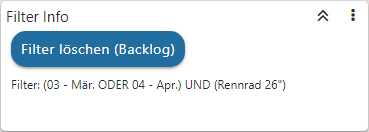

In der "Quickfilter Info" werden die Informationen über den aktuellen Quickfilter angezeigt. Mit Hilfe des Buttons "Filter löschen" wird der aktuelle Quickfilter, welcher auf die Datenquelle wirkt, gelöscht.